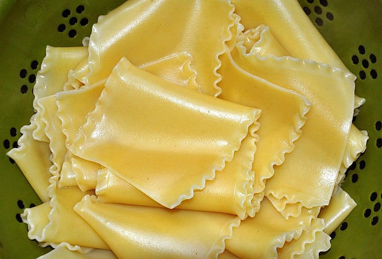

The DishLasagna is a great dish that is layered with lasagna noodles, sausage, cheese, and tomato sauce. It is topped with mozzarella cheese after all the layers are added, and then it is baked at 375 degrees in the oven. The overall rating of this dish is an 8/9; it would have scored perfectly if it weren't for the texture dragging it down. |
 |
Taste RatingThe taste of lasagna is a rich, savory-flavored dish, with the savory aspect of the dish leading in flavor. The ricotta cheese adds a mild taste while the meat and spices add the savory part of the dish. Its multiple layers of savory and creamy make sure you never have a bite without flavor. I am going to give this dish a 3/3 for flavor; it will always leave you happy after dinner. |

|
Texture RatingThe texture of lasagna is creamy and soft, making it easy to bite into. The cheese on top adds a stringy part to the texture, making it satisfying to pick up with a fork and bite. The only downside to the dish is that it falls apart easily, so the slice of lasagna can slide and fall apart, making it less consistent. I give the texture a 2/3, close to being perfect, but it is falling apart, making it lose a point. |

|
Presentation RatingThe presentation of lasagna comes in a long dish fresh out of the oven, which you cut into like a cake. The layers of the lasagna make it look appealing; anyone who sees the dish craves it. I give the presentation of this dish a 3/3. Every aspect of the presentation makes you want to try it. |
|